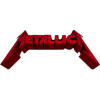
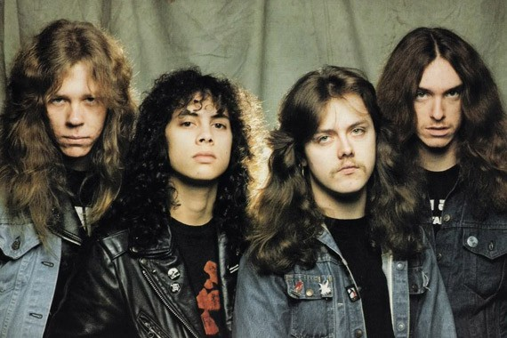
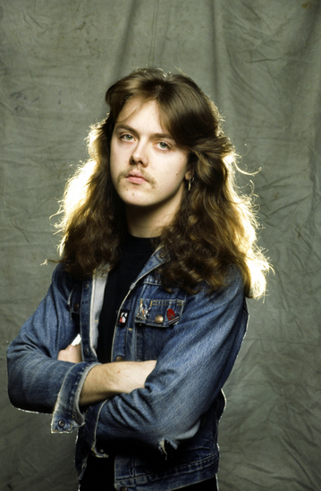

Metallica is an American heavy metal band formed in 1981 in Los Angeles, although they have resided in San Francisco for most of their career. It consists of vocalist and rhythm guitarist James Hetfield, drummer Lars Ulrich, lead guitarist Kirk Hammett, and bassist Robert Trujillo. Metallica is considered one of the most commercially successful bands of all time, with over 125 million albums sold worldwide. It was founded in 1981 in Los Angeles by Ulrich and Hetfield, who were later joined by Ron McGovney and Dave Mustaine. In 1982, McGovney left the band and was replaced by Cliff Burton. The following year, Mustaine was fired due to behavioral issues and was replaced by former Exodus guitarist Kirk Hammett. In 1986, while on tour, Burton was killed in a bus accident in Sweden, leading Jason Newsted to join the band. In 2001, Newsted left the band and was replaced by Robert Trujillo in 2003.


(born August 3, 1963, Downey, California) is an American musician, best known as the vocalist, rhythm guitarist, principal songwriter, and co-founder of the band Metallica. He is considered one of the greatest heavy metal musicians of all time.